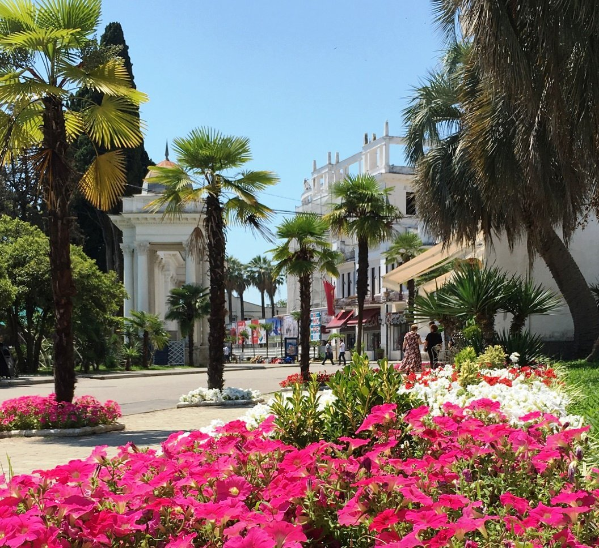

Сухум

| Население | 65,439 |
| Плотность | 176 чел/км² |
| Площадь | 372 км² |
| Средняя температура | 14°C |
| Основан | 6 век до н.э. |
Сухум — столица и крупнейший город Абхазии, известен своими пляжами и историческими достопримечательностями.